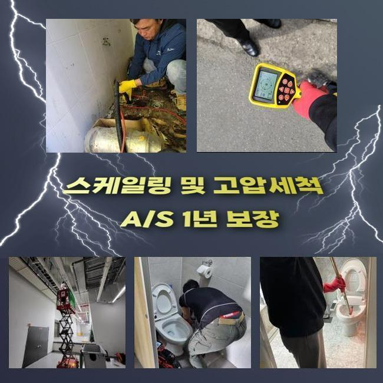
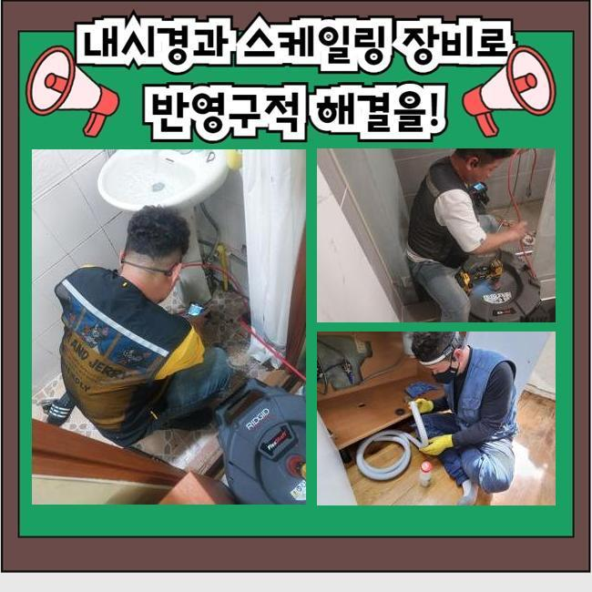
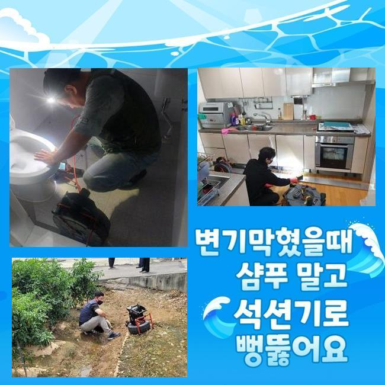
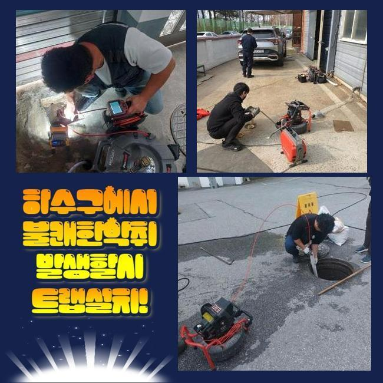
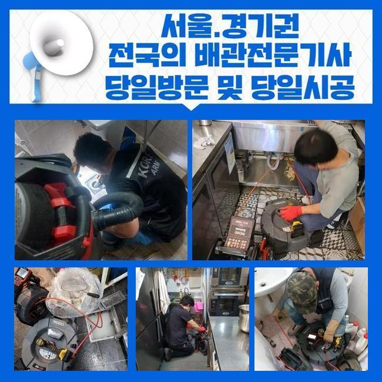

🏠 남동구 서창동씽크대뚫음 고잔동 냄새차단 설비업체
용인 남동 싱크대막힘 전문 시공 후기

📋 작업 개요
- 위치: 용인 남동, 남동, 용인
- 서비스 유형: 싱크대막힘, 하수구막힘, 배관막힘, 역류해결, 뚫는업체, 배관청소, 고압세척, 악취차단
- 작업 일시: 2025. 4. 16. 15:37
- 업체명: 하수구수사대 (010-5615-2118)
🔍 문제 상황
남동구 서창동씽크대뚫음 고잔동 냄새차단 설비업체
금일에는 오피스의 팬트리에서 야기된 통수오류를 바로잡은 사례를 말씀드리고자합니다
어렵지않고 효율적인 방법들이 많으니 꼼꼼히 살펴보셔도 좋습니다
사무공간이란 장소에서 시작된 일이다 보니 셀프조치로 뚫어보려는 시도들이 눈에 띄었죠
전문업체는 대응방법들을 어떠한 절차로 수행하는지 또한 각 관로들을 지켜내는 방안들도 어렵지않게 설명드려볼게요
의뢰인은 이용할때 음식물을 취급하는 장소가 아니였기에 막혀버리는 문제들이 없을것이라 생각했다고 말해주셨죠
해당 현장은 식자재를 사용할 수 없는 장소라서 정기적인 관리책 수행이 간과된 사례가 대다수에요
저희업체는 즉각 출동했죠 도착하여 각 관로들을 주시해보았죠
이곳저곳 확인하니 역류하게되는 문제는 없었지만 느린 속도로 내려가는 광경이 눈에 들어왔어요
배수가 제대로 안되면 갑작스레 압이 올라가고 솟구치는 증상들이 생겨날 확률이 다분해요

🔎 원인 분석
💡 전문가 진단: 정밀 진단 장비를 사용하여 슬러지의 고착 여부를 판명하고 타격/세척 작업을 실시했습니다.
그렇기때문에 석션장비로 알려진 장비를 꺼내 입구 근처의 오수들을 흡입시켰어요
석션장비는 진단전에 수월한 관찰을 위하여 운용하기도 하며 찌꺼기와 같은 잔해를 걷어낼 때 효율적인 역할들을 수행합니다
썩션통에 오수와 이물이 흡입됐으나 그럼에도 답답하게 흐르는 상태였습니다
석션기기의 가용 다음으론 내시경기기로 심층부까지 확인했습니다
내시경케이블을 투입시키니 잔해물들이 자리하고 있어 통로길이 협소하게 되었는데요
식자재 취급을 안하는 곳인데 왜 잔해들이 쌓이게된건가 의아할 수 있겠지만 사무실이라면 주기성을 갖춘 관리책 실시가 결여되는 곳이 많죠
그리하여 과자나 커피에서 나오는 부산물 기름이 뒤엉켜 슬러지들을 만들어내요
내시경도구로 싱크대쪽을 관찰하며 샤프트도구로 흡착물들을 분쇄시키며 천천히 배관을 청소해주니 물길들이 확보되며 통수영역들이 복구되기 시작했는데요
기름의 경우엔 관찰할 때 불그스름한 색을 띄게되므로 청소가 이뤄지면 화면상으로도 탈바꿈되는것을 목격하게 된답니다
샤프트세척을 했음에도 물이 아직도 수월하게 배출되지 못하는 상태였어요
일단은 많은 수도를 테스트 삼아 흐르게하니 어떤곳인지 고이며 막혀버리는 증상들이 보였어요

🔧 작업 과정
오수가 고인 상태라는건 여타 트리거들이 존재한다는 신호탄이죠
슬러지말고도 놓친 요소가 남아있단 걸 뜻하므로 외측라인까지 체크할 필요들이 있었는데요
저희의전문가는 계속적인 문제들의 까닭들을 찾고자 내시경 선을 엘보라인까지 투입해주었어요
마침내 발견하게 된 건 배수관의 일부분들이 바닥라인에 매립되어진 형상이 아니라 외측으로 노출되어 설치됐다는 사실이었는데요
내부에서 내시경장비로 확인해주는게 힘들어 발걸음을 돌려 반대로 장비들을 이용할 수 있게끔 특정부분을 뚫은뒤 구멍을 통하여 내시경 내시경 라인을 삽입시켰습니다
내시경 선을 투입하니 이물들로 문제들을 발견했죠
탕비실라인에서는 원래의 배수관이 별개인 상태였고 욕실 쪽으로 가는 라인과 외측으로 뻗어나가있는 구조였어요
해당 하수도를 따라가니 세면대로 빠지는 위치에 폐기물이 떡하니 좁히게했던 실정이었습니다
싱크대쪽의 하수관이 아니라 예측하기 힘든 위치에 사이즈가 컸던 오염물이 자리잡아 인지하기까지 오래걸렸으나 결국 지속적인 막히는 문제의 주된 까닭을 찾아냈습니다
몇번에걸쳐 포인트를 체크하고 이물제거가 필요한 포인트의 라인을 타공해 잔해를 배출해냈는데요
배출시켰더니 각진 고무재질이였는데 어떻게 빠지게된건지 알 방법은 없었지만 크기도했고 한 라인에 자리잡았을 때라면 배수자체가 불가할 수 밖에 없는 물질이였죠
주방쪽의 배수관과 통수오류를 발생케하는 이물질들도 사라지게하는 과정들을 완료하니 물빠짐이 복구되었고 수리들이 끝났어요
그리고 고객님은 악취문제도 여쭈셨습니다 작업 중에 느꼈지만 관로에서 발생하는것을 확인했죠
트랩부속에 손상이슈가 보였는데요 빈틈없이 마무리를 하고서 새로운 트랩부품으로 교체도 여지없이 해드렸습니다
최종적인 검수를 실시해보고자 탕비실공간으로 발걸음을 옮겨 싱크대쪽에 수도를 틀어 통수시키니 처음과는 비교도 안될정도로 답답한 기색없이 배출되었습니다
해당 현장의 배수관 관련 증세도 이상없이 수습되었어요


✅ 작업 완료
진단을 철저히 해 결국에는 문제의 연유를 추적하며 결국 막힌 까닭들을 찾았고 수도 사용에 있어서도 제한이 없어지게 되었습니다
이와같이 고객이 장기적으로 고생하시지않게 모든 과정을 완료했답니다
사용을 다하시고 수채구멍으로 기름이라던지 찌꺼기들이 안빠지게 관리하는것이 좋고 청소들도 때때로 진행해주시면 좋습니다
저희전문인들은 재발하지않는 수리에 몰두하고 있어요 이에 작업 중에 저희들이 왔다간 후 청소해준 부분에서 재발한다면 다시 찾아뵈어 A/S서비스도 수행하고 있어요
배수관이 막혀 의뢰를 고려하는 중이시라면 저희에게 문의하시는건 어떠실지요?



⚠️ 주방 싱크대 배관 막힘 예방 수칙
- ✅ 기름기가 묻은 식기나 프라이팬은 설거지 전 키친타올로 반드시 기름때를 닦아내세요.
- ✅ 주기적으로 싱크대 개수대에 뜨거운 물을 가득 받아 한 번에 내려 배관 내부 기름을 씻어내세요.
- ✅ 배수구 거름망을 미세한 필터로 사용하시고 음식물 찌꺼기가 틈으로 새어 들지 않게 관리하세요.
- ✅ 베이킹소다와 식초를 뜨거운 물과 함께 일주일에 한 번씩 부어주면 배관 살균과 막힘 예방에 좋습니다.
💡 핵심 정리
- 확실한 장비 작업(내시경 점검 및 샤프트 스케일링)으로 원인을 뿌리 뽑습니다.
- 작업 후 1년 이내에 동일한 부위 재발 시 100% 무상 A/S 서비스를 보장합니다.
- 서울 · 경기 · 인천 전 지역에 24시간 언제든 긴급 출동할 수 있도록 항시 대기 중입니다.
❓ 자주 묻는 질문 (FAQ)
🚨 용인 남동 싱크대막힘 문제로 고민이신가요?
정확한 원인 진단과 확실한 시공으로 재발 없는 해결을 약속드립니다.
24시간 긴급 출동 | 서울 · 경기 · 인천 전지역 | 1년 내 재발 시 무상 A/S